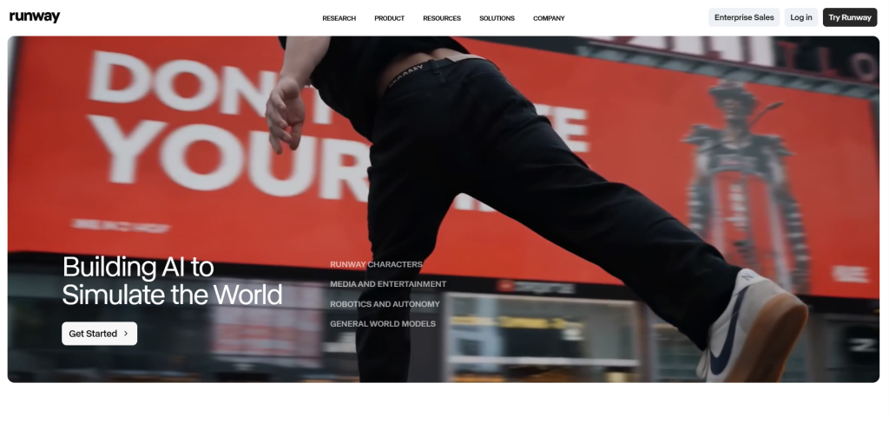
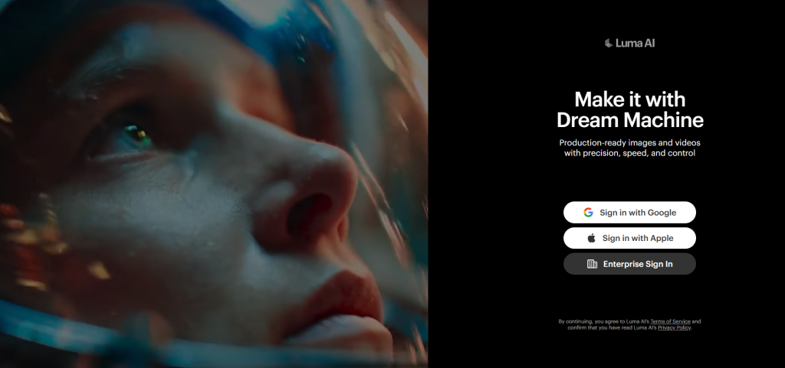
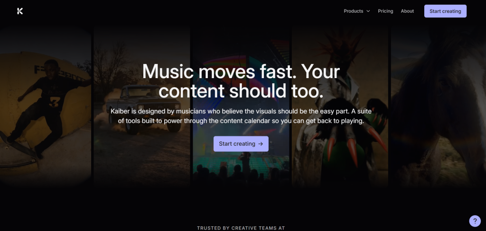
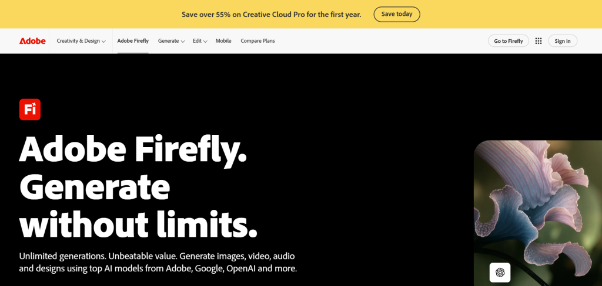

Motion graphics have always been about bringing ideas to life through dynamic visuals, but the game has changed dramatically. In 2026, AI tools are empowering designers, marketers, filmmakers, and content creators to produce stunning animations faster than ever before, without sacrificing quality or creativity.
Whether you're crafting explainer videos, social media content, title sequences, or brand animations, these intelligent platforms handle repetitive tasks, generate ideas instantly, and open doors to effects that once required massive teams and budgets. Yet, they still leave room for your unique vision to shine.
In this guide, we'll explore the five best AI tools for motion graphics that are making waves right now. We'll break down their standout features, real-world applications, pros and cons, and tips to get the most out of each. By the end, you'll have a clear roadmap to elevate your workflow.
Why AI is a Game-Changer for Motion Graphics?
Traditional motion design in tools like After Effects demands hours of keyframing, tracking, and rendering. AI flips the script by automating asset creation, motion interpolation, style transfers, and even full scene generation from simple text prompts or images.
These tools excel at rapid prototyping, consistent character animation, music-reactive visuals, and photorealistic or stylized effects. The result? More time for storytelling and experimentation, and less on technical drudgery. Professionals are blending AI outputs with manual polish for hybrid workflows that deliver pro results at record speed.
1. Runway ML – The Professional Powerhouse

Runway ML stands tall as one of the most advanced AI platforms for motion graphics and video production. Its Gen-4.5 model delivers exceptional motion quality, prompt adherence, and visual fidelity, making it a favorite among filmmakers and studios.
Key Features:
- Text-to-video and image-to-video generation
- Advanced motion brush and camera controls for precise animation
- AI-powered editing tools like background removal, motion tracking, and inpainting
- Director Mode and real-time collaboration
- Integration with existing workflows for VFX and compositing
Motion designers love Runway for creating cinematic sequences, stylized transitions, and complex VFX elements. Upload a still image and animate it with natural camera moves, or generate entire scenes that respond intelligently to prompts. It's particularly strong for narrative-driven content and brand commercials.
Pros: High control, pro-level outputs, frequent updates. Cons: Credit-based pricing can add up for heavy users.
Many professionals combine Runway with After Effects for final polishing. Check out their official site: runwayml.com.
2. Pika Labs – Creative Speed and Stylization
Pika Labs shines when you need quick, expressive animations with strong artistic flair. It's incredibly user-friendly and excels at turning ideas into eye-catching short clips, making it ideal for social media motion graphics and experimental work.
Key Features:
- Pikaframes for smooth keyframe transitions between images
- Lip sync, sound effects, and audio-reactive animations
- Pikaswaps and Pikadditions for easy object manipulation in videos
- Diverse styles including anime, 3D, Pixar-like, and abstract motion graphics
- Fast generation speeds with camera control options
Creators use Pika for viral reels, title animations, product reveals, and fun character-driven graphics. Its ability to handle stylized motion makes it perfect for brands wanting distinctive looks without weeks of production time.
Pros: Intuitive interface, great for beginners and pros alike, strong community. Cons: Shorter clip lengths compared to some competitors.
Explore more at pika.art.
3. Luma Dream Machine – Realistic Motion Mastery

Luma AI's Dream Machine (powered by models like Ray) excels at generating coherent, physics-aware video with ultra-realistic details. It's a top choice when photorealism and natural movement are priorities in your motion graphics.
Key Features:
- Advanced text-to-video and image-to-video with logical event sequences
- Strong handling of complex motion, lighting, and environmental interactions
- 3D understanding for more believable animations
- High-resolution outputs suitable for professional use
- Tools for extending clips and maintaining consistency
Use it for product visualizations, architectural fly-throughs, documentary-style B-roll, or hyper-realistic character animations. Its reasoning capabilities help create scenes that feel grounded in real-world physics.
Pros: Excellent realism and motion coherence. Cons: Generation times can vary; prompt engineering matters.
Visit lumalabs.ai to try it.
4. Kaiber AI – Music-Driven Visual Magic

For motion graphics synced to audio, Kaiber AI is in a league of its own. It transforms music into synchronized animations, making it indispensable for music videos, event promos, and dynamic branding content.
Key Features:
- Audio-reactive generation that pulses with beats and rhythm
- Multiple animation styles (Motion, Flipbook, etc.)
- Superstudio interface combining image, video, and audio models
- Video-to-video transformations and storyboard tools
- Support for various artistic and cinematic aesthetics
Musicians, DJs, and marketers rave about how Kaiber brings tracks to life visually. It's excellent for abstract motion graphics, lyric videos, and energetic social content.
Pros: Seamless music sync, creative freedom. Cons: Mixed user reviews on consistency for complex projects.
Head to kaiber.ai for hands-on experimentation.
5. Adobe Firefly + After Effects – The Integrated Powerhouse

Adobe continues to lead by embedding powerful AI directly into industry-standard tools. Firefly integrated with After Effects offers a seamless experience for traditional motion designers transitioning to AI-assisted workflows.
Key Features:
- Generative fill, text-to-image/video, and style matching
- AI roto brush, content-aware tools, and keyframe assistance
- Motion path prediction and smart asset management
- Vector shape support and gradient animations
- Full Creative Cloud integration
This combo is perfect for professionals who need precision alongside AI speed. Automate tedious tasks while retaining full creative control in a familiar environment.
Pros: Professional output, ecosystem familiarity. Cons: Requires subscription to Adobe suite.
Learn more through Adobe's resources.
Comparison Table: Choosing the Right Tool
| Tool | Best For | Motion Control | Realism/Stylization | Pricing Model | Ease of Use |
|---|---|---|---|---|---|
| Runway ML | Cinematic VFX & Pro Work | Excellent | High Realism | Credits/Subscription | Medium-High |
| Pika Labs | Quick Social & Stylized | Very Good | Strong Stylization | Free + Paid | High |
| Luma Dream Machine | Photorealistic Scenes | Good | Top Realism | Credits | Medium |
| Kaiber AI | Music-Synced Animations | Good | Artistic | Subscription | High |
| Adobe Firefly/AE | Professional Polish & Integration | Excellent | Versatile | Subscription | Medium (for AE users) |
This table highlights how each tool fits different needs – mix and match for best results.
Real-World Tips and Workflows
Successful users treat AI as a collaborative partner. Start with broad prompts and refine iteratively. Combine tools: generate concepts in Midjourney or Pika, refine motion in Runway, and composite in After Effects.
Communities on Reddit are goldmines for tips. Check discussions in r/MotionDesign and r/AfterEffects where creators share workflows, prompt libraries, and troubleshooting advice (e.g., this thread on AI tools).
On X (Twitter) and Instagram, follow showcases using hashtags like #AIMotionGraphics for daily inspiration. YouTube tutorials for specific tools are abundant – search for "Runway Gen-4.5 motion graphics tutorial 2026" to see practical examples.
Challenges and Best Practices
AI isn't perfect yet. Common issues include inconsistent character appearance across clips, artifacts in complex motions, and copyright considerations with training data. Always review outputs critically and add personal touches.
Best practices:
- Use specific, descriptive prompts with style references, camera directions, and mood.
- Iterate quickly – generate variations and select the best.
- Maintain ethical standards and disclose AI use when required.
- Backup traditional skills; AI augments, doesn't replace, expertise.
Conclusion
The five tools we've covered – Runway ML, Pika Labs, Luma Dream Machine, Kaiber AI, and Adobe Firefly with After Effects – represent the cutting edge of AI for motion graphics in 2026. They democratize high-quality animation, speed up production, and spark new creative possibilities.
The future belongs to those who embrace these technologies while honing their storytelling and design sensibilities. Experiment boldly, stay curious, and watch your projects reach new heights.
Ready to transform your motion graphics? Pick one tool to dive into today and start creating. The only limit is your imagination.